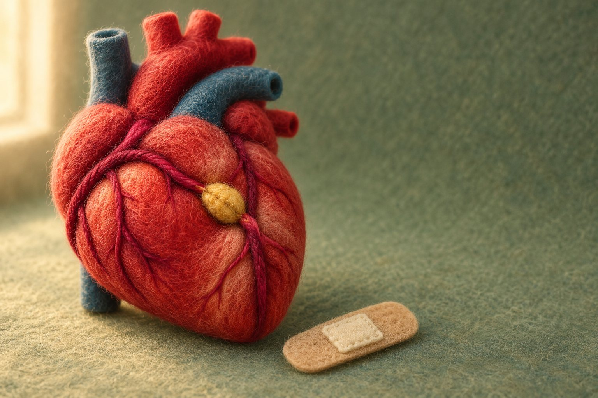

衛教文章
門診裡最常被問的問題，我寫成可以帶回家慢慢看的文章。很多篇最早發表在我的粉絲專頁「一千個傷心的理由」，這裡整理成完整的網頁版，依主題分類。
最新文章
心律不整與節律器・2026 年 10 月
萬聖節，心跳別來嚇人：無導線節律器讓手照樣舉高高
心跳太慢需要節律器的人，現在多一個選擇：無導線節律器。我用萬聖節的場景，說清楚它和傳統節律器在生活上的差別、三件一定要知道的事。
季節與生活・2026 年 07 月
RSV 不只是感冒：60 歲以上與心臟病患者要注意什麼
60 歲以上、有心臟病的人感染 RSV 後，可能發生嚴重肺炎與心血管併發症；符合條件的人，可以和醫師討論是否自費接種疫苗。

代謝、體重與心衰竭・2026 年 04 月
壞膽固醇多少要吃藥？瘦的人也會高血脂嗎
壞膽固醇要不要吃藥，不是只看一個 LDL 數字，而是看您整體的心血管風險；體型不胖也可能血脂異常，是否需要藥物，要先抽血檢查再由醫師評估。
兩個主題館


高血壓4 篇
- 高血壓可以運動嗎？血壓多高要先控制高血壓可以運動，規律運動本身就是降壓的一部分；但靜態收縮壓大於 160 mmHg、血壓還沒控制時，不建議做高強度運動，要先用藥物把血壓控制好。→
- 高血壓的標準是多少？控制目標與為什麼要吃藥2022 年台灣指引以居家血壓平均 130/80 mmHg 以上診斷高血壓，一般治療目標是低於 130/80；血壓藥的目的是降低中風與併發症風險。→
- 在家怎麼量血壓才準？722 原則與量測步驟選血壓較高的那隻手、量前 30 分鐘不喝咖啡茶並先排尿、坐有靠背的椅子休息 5 分鐘，再依 722 原則連續量 7 天。→
- 頑固型高血壓怎麼辦？腎動脈交感神經電燒是什麼腎動脈交感神經電燒是用導管降低腎動脈周圍交感神經活性的治療，只用在已經吃多種降壓藥、血壓仍降不下來的頑固型高血壓，而且要經過團隊評估。→

代謝、體重與心衰竭4 篇
- 壞膽固醇多少要吃藥？瘦的人也會高血脂嗎壞膽固醇要不要吃藥，不是只看一個 LDL 數字，而是看您整體的心血管風險；體型不胖也可能血脂異常，是否需要藥物，要先抽血檢查再由醫師評估。→
- 肥胖和心臟有什麼關係？減重對心血管的好處肥胖是慢性疾病，與高血壓、心臟衰竭、心房顫動、糖尿病、脂肪肝都有關；生活型態是基礎，藥物只是部分人的工具，要由醫師評估。→
- 腳水腫、體重增加、容易喘，是心臟衰竭嗎腳水腫、體重莫名增加、比同年紀的人容易喘，不一定是腎臟的問題，也可能是心臟衰竭，需要靠心臟超音波等檢查來判斷，天冷時更要留意。→
- 糖尿病會傷心臟嗎？血糖、血壓、血脂要一起管糖尿病會明顯提高心血管疾病的風險，所以除了控制血糖，血壓、血脂和體重也要一起管，部分新一代降血糖藥還有心血管保護的證據。→
週二下午14:00–17:00週三上午09:00–12:00週四上午09:00–12:00週四夜診17:30–20:30